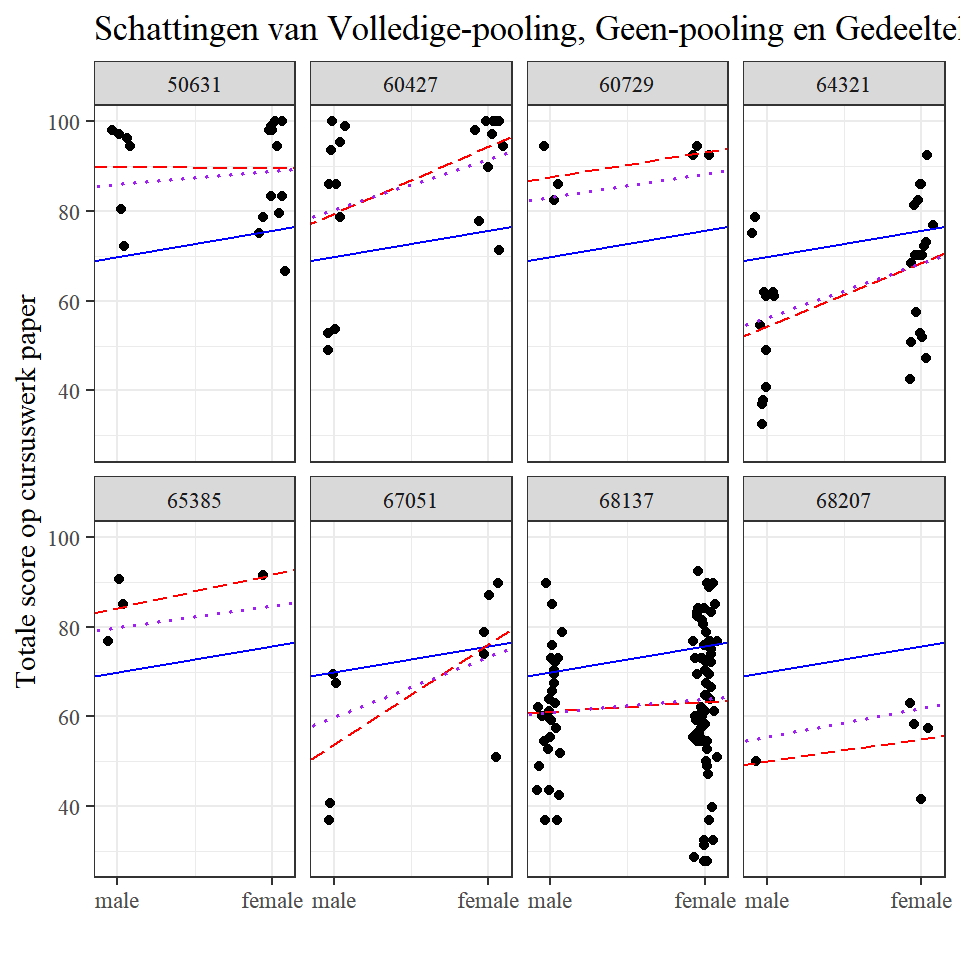
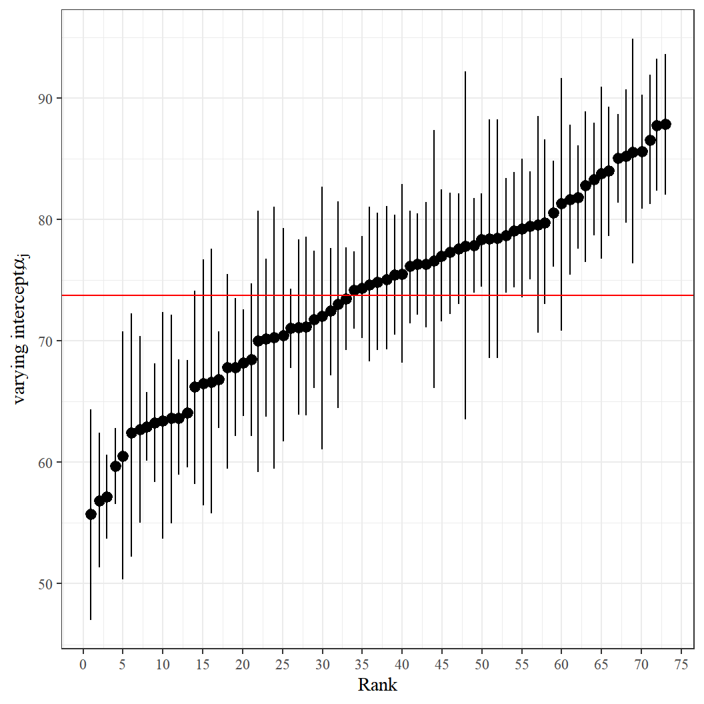
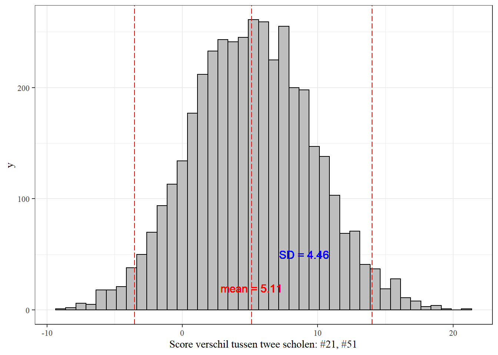
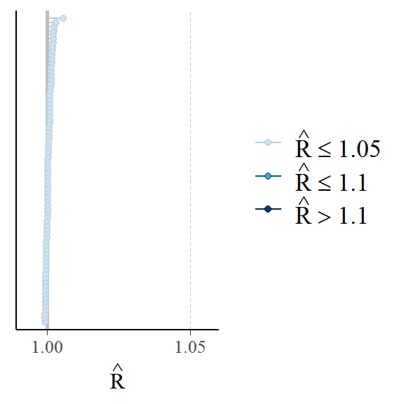

Een paar jaar geleden schreven Joonho Lee en collega’s van de Berkley Universiteit onder leiding van Sophia Rabe-Hesketh (van wie ik al eerder veel geleerd heb over multilevel analyse) een mooie tutorial over het gebruik van rstanarm in multilevelanalyse. Omdat deze tutorial in vele opzichten leerzaam is, heb ik deze vertaald. Zo maakte ik mij het werken met rstanarm eigen maar ook hoe je zo’n tutorial in rmarkdown zet. Alle credits gaan natuurlijk naar Joonhoo Lee e.a.. De oorspronkelijke tutorial van 24 april 2018 vind je hier. Later vond ik ook op github de syntax en kon ik diverse eigen fouten weer bijstellen hier.
Introductie
Een veel voorkomend kenmerk van datastructuren in het onderwijs is dat analyse-eenheden (b.v. leerlingen) genest zijn in hogere organisatorische clusters (b.v. scholen). Dit soort structuren leidt tot afhankelijkheid tussen de antwoorden die worden waargenomen voor eenheden binnen dezelfde cluster. Leerlingen in dezelfde school hebben in het algemeen de neiging meer gelijkenissen te vertonen in hun academische en attitudinale kenmerken dan leerlingen die willekeurig uit de bevolking worden gekozen.
Multilevel modellen1 zijn ontworpen om dergelijke afhankelijkheid binnen clusters te modelleren. Multilevelmodellen erkennen het bestaan van gegevensclustering (op twee of meer niveaus) door residuele componenten op elk niveau in de hiërarchie toe te staan. Bijvoorbeeld, een model met twee niveaus dat de groepering van leerlingresultaten binnen scholen toelaat, zou residuen op zowel leerling- als schoolniveau omvatten. De residuele variantie wordt dan verdeeld in een tussen-school component (de variantie van de residuen op schoolniveau) en een binnen-school component (de variantie van de residuen op leerlingniveau).
In deze tutorial laten Joonhoo Lee en collega’s zien hoe je een multilevel lineair model kunt fitten binnen een volledig Bayesiaans raamwerk met rstanarm. Deze handleiding is in de eerste plaats gericht op onderwijsonderzoekers die lme4 in R hebben gebruikt om modellen te fitten op hun gegevens en die mogelijk geïnteresseerd zijn in het leren fitten van Bayesiaanse multilevel modellen. Voor lezers die lme4 nog niet eerder hebben gebruikt, geven we echter een kort overzicht van het gebruik van het pakket voor het fitten van multilevel modellen.
Deze tutorial maakt gebruik van Stan versie 2.17.3 en vereist de volgende R pakketten.
# Pakketten die nodig zijn
library(mlmRev)
library(lme4)
library(rstanarm)
library(ggplot2)Data voorbeeld
Ze analyseren de Gcsemv dataset (Rasbash et al. 2000) uit het mlmRev pakket in R. De gegevens omvatten de GCSE-examenscores (General Certificate of Secondary Education) van 1.905 leerlingen van 73 scholen in Engeland op een natuurwetenschappelijk vak. De Gcsemv-dataset bestaat uit de volgende 5 variabelen:
- school: schoolidentificatiecode
- student: identificatiecode student
- gender: geslacht van een leerling (M: Man, F: Vrouw)
- written: totaalscore op schriftelijk werkstuk
- course: totaalscore op schriftelijk werkstuk
# Use example dataset from mlmRev package: GCSE exam score
data(Gcsemv, package = "mlmRev")
summary(Gcsemv) school student gender written course
68137 : 104 77 : 14 F:1128 Min. : 0.60 Min. : 9.25
68411 : 84 83 : 14 M: 777 1st Qu.:37.00 1st Qu.: 62.90
68107 : 79 53 : 13 Median :46.00 Median : 75.90
68809 : 73 66 : 13 Mean :46.37 Mean : 73.39
22520 : 65 27 : 12 3rd Qu.:55.00 3rd Qu.: 86.10
60457 : 54 110 : 12 Max. :90.00 Max. :100.00
(Other):1446 (Other):1827 NA's :202 NA's :180 Twee onderdelen van het examen werden geregistreerd als uitkomstvariabelen: schriftelijk werkstuk (written) en cursuswerkstuk (course). In deze tutorial wordt alleen de totaalscore op het cursuswerkstuk (course) geanalyseerd. Zoals hierboven te zien is, ontbreken er bij sommige waarnemingen waarden voor bepaalde covariaten. Hoewel we de data niet subsetten om alleen volledige gevallen op te nemen om aan te tonen dat rstanarm deze waarnemingen automatisch laat vallen, is het over het algemeen een goed gebruik om dit handmatig te doen indien nodig.
# Maak Male dereferentiecategorie en hernoem de variabele
Gcsemv$female <- relevel(Gcsemv$gender, "M")
# Gebruik alleen de totaalscore op course
GCSE <- subset(x = Gcsemv,
select = c(school, student, female, course))
# Tel unieke scholen en studenten
J <- length(unique(GCSE$school))
N <- nrow(GCSE)Het pakket rstanarm automatiseert verschillende stappen van datavoorbewerking, waardoor het gebruik ervan sterk lijkt op dat van lme4 en wel op de volgende manier.
Input - rstanarm kan een dataframe als input nemen2.
Ontbrekende gegevens - rstanarm verwijdert automatisch waarnemingen met NA waarden voor elke variabele gebruikt in het model3.
Identifiers - rstanarm vereist niet dat identifiers opeenvolgend zijn4. We stellen voor dat het een goede gewoonte is om alle cluster- en unit-identifiers, evenals categorische variabelen als factoren op te slaan. Dit geldt evenzeer voor lme4 als voor rstanarm. Men kan de structuur van de variabelen controleren met behulp van de
str()functie.
# Check structure of data frame
str(GCSE)'data.frame': 1905 obs. of 4 variables:
$ school : Factor w/ 73 levels "20920","22520",..: 1 1 1 1 1 1 1 1 1 2 ...
$ student: Factor w/ 649 levels "1","2","3","4",..: 16 25 27 31 42 62 101 113 146 1 ...
$ female : Factor w/ 2 levels "M","F": 1 2 2 2 1 2 2 1 1 2 ...
$ course : num NA 71.2 76.8 87.9 44.4 NA 89.8 17.5 32.4 84.2 ...Likelihood inferentie met lmer()
In dit deel bespreken we kort drie lineaire multilevelmodellen die in deze tutorial zullen worden toegepast. We beginnen met een variërend intercept model zonder voorspellers (Model 1), dan gaan we verder met het variërend intercept model met één voorspeller (Model 2), en het variërend intercept en helling model (Model 3).
Model 1: Variërend intercept model zonder voorspellers (Variantiecomponentenmodel)
Beschouw het eenvoudigste multilevel model voor leerlingen \(i=1,...,n\) genest binnen scholen \(j=1,...,J\) en voor wie we examenresultaten als respons hebben. We kunnen een variabel interceptmodel met twee niveaus zonder voorspellers schrijven met de gebruikelijke tweedelige formulering als
\[Y_{ij}=\alpha_{j} + \epsilon_{ij}, \text{ where } \epsilon{ij} \sim N(0,\sigma^2_{y}) \] \[\alpha{_j}=u_{\alpha} + u_{j}, \text { where } \epsilon{ij} \sim N(0,\sigma^2_{y})\]
waarin \(yij\) de examenscore is voor de \(ith\) leerling op de \(jth\) school, \(\alpha_{j}\) de variërende intercept voor de jde school, en \(u_{a}\) het algemene gemiddelde voor alle scholen. Als alternatief kan het model in verkorte vorm worden uitgedrukt als
\[y_{ij}=u_{a} + u_{j} = \epsilon_{ij}\] Als we verder aannemen dat de fouten op leerlingniveau \(\epsilon_{ij}\) normaal verdeeld zijn met gemiddelde 0 en variantie \(\sigma^2_{y}\), en dat de variërende intercepten op schoolniveau \(\alpha_j\) normaal verdeeld zijn met gemiddelde \(u_{a}\) en variantie \(\sigma^2_{a}\), dan kan het model worden uitgedrukt als
\[y_{ij}∼ N(\alpha_{j},\sigma^2_{y})\]
\[a_{j}∼ N(u_{a},\sigma^2_{a})\]
Dit model kan dan worden aangepast met lmer(). We specificeren een intercept (de voorspeller “1”) en laten deze variëren met de niveau-2-identifier (school). We specificeren ook de REML = FALSE optie om maximum likelihood (ML) schattingen te krijgen in plaats van de standaard restricted maximum likelihood (REML) schattingen.
M1 <- lmer(formula = course ~ 1 + (1 | school),
data = GCSE,
REML = FALSE)
summary(M1)Linear mixed model fit by maximum likelihood ['lmerMod']
Formula: course ~ 1 + (1 | school)
Data: GCSE
AIC BIC logLik deviance df.resid
14111.4 14127.7 -7052.7 14105.4 1722
Scaled residuals:
Min 1Q Median 3Q Max
-4.9693 -0.5101 0.1116 0.6741 2.7613
Random effects:
Groups Name Variance Std.Dev.
school (Intercept) 75.24 8.674
Residual 190.77 13.812
Number of obs: 1725, groups: school, 73
Fixed effects:
Estimate Std. Error t value
(Intercept) 73.72 1.11 66.4Onder Fixed effects zien we dat het intercept \(u_{a}\), gemiddeld over de populatie van scholen, wordt geschat op 73,72. Onder Random-effects zien we dat de standaardafwijking tussen de scholen \(\sigma_{a}\) wordt geschat op \(8.67\) en de standaardafwijking binnen de scholen \(\sigma_{y}\) op \(13.81\).
Model 2: Variërend intercept model met een enkele voorspeller
Het variërende interceptmodel5 met een indicatorvariabele voor het vrouwzijn xij kan worden geschreven als
\[Y_{ij}∼N(a_{j}+\beta x{ij}, \sigma^2_{y}),\]
\[a_{j}∼N(u_{a}, \sigma^2_{a})\].
De vergelijking van de gemiddelde regressielijn voor alle scholen is \(u_{ij}=u_{α}+βxij\). De regressielijnen voor specifieke scholen zullen evenwijdig zijn aan de gemiddelde regressielijn (met dezelfde helling β), maar verschillen wat betreft het intercept \(a_{j}\). Dit model kan geschat worden door vrouwelijk toe te voegen aan de formule in de lmer() functie, waardoor alleen het intercept per school varieert en de “helling” voor vrouwelijkheid constant blijft voor alle scholen
M2 <- lmer(formula = course ~ 1 + female + (1 | school),
data = GCSE,
REML = FALSE)
summary(M2)Linear mixed model fit by maximum likelihood ['lmerMod']
Formula: course ~ 1 + female + (1 | school)
Data: GCSE
AIC BIC logLik deviance df.resid
14017.4 14039.2 -7004.7 14009.4 1721
Scaled residuals:
Min 1Q Median 3Q Max
-4.7809 -0.5401 0.1259 0.6795 2.6753
Random effects:
Groups Name Variance Std.Dev.
school (Intercept) 76.65 8.755
Residual 179.96 13.415
Number of obs: 1725, groups: school, 73
Fixed effects:
Estimate Std. Error t value
(Intercept) 69.730 1.185 58.87
femaleF 6.739 0.678 9.94
Correlation of Fixed Effects:
(Intr)
femaleF -0.338De gemiddelde regressielijn over de scholen wordt dus geschat als \(\hat{\mu}_{ij}=69.73+ 6.74 x_{ij}\), waarbij \(\sigma_\_alpha\) en \(\sigma_y\) worden geschat als respectievelijk \(8.76\) en \(13.41\). Als we deze schattingen van \(\mu_alpha\), \(\beta\), \(\sigma^2_{y}\), en \(\sigma^2_{alpha}\) als de ware parameterwaarden beschouwen, kunnen we de **Best Linear Unbiased Predictions (BLUPs) voor de fouten op schoolniveau \(\hat{u}_j = \hat{\alpha}_{j} - \hat{\mu}_{\alpha}\) verkrijgen.
De BLUPs zijn equivalent met de zogenaamde Empirical Bayes (EB)-voorspelling, die het gemiddelde is van de posterieure verdeling van \(u_{j}\) gegeven alle geschatte parameters, alsmede de willekeurige variabelen \(y_{ij}\) en \(x_{ij}\) voor het cluster. Deze voorspellingen worden “Bayes” genoemd omdat ze gebruik maken van de vooraf gespecificeerde prioriteitsverdeling1 \(u_j \sim N(\mu_\alpha, \sigma^2_\alpha)\), en bij uitbreiding \(u_j \sim N(0, \sigma^2_\alpha)\), en “Empirisch” genoemd omdat de parameters van deze prior, \(\mu_\alpha\) en \(\sigma^2_{\alpha}\), naast \(\beta\) en \(\sigma^2_{y}\), geschat worden uit de data.
In vergelijking met de ML-benadering (Maximum Likelihood - maximale waarschijnlijkheid), waarbij waarden voor \(u_j\) worden voorspeld door alleen de geschatte parameters en gegevens van cluster \(j\) te gebruiken, houdt de EB-benadering bovendien rekening met de voorafgaande verdeling van \(u_{j}\), en levert zij voorspelde waarden op die dichter bij \(0\) liggen (een verschijnsel dat wordt beschreven als shrinkage of partial pooling). Om te zien waarom dit verschijnsel shrinkage wordt genoemd, drukken we de uit EB voorspelling verkregen schattingen voor \(u_j\) gewoonlijk uit als \(\hat{u}_j^{text{EB}} = \hat{R}_j\hat{u}_j^{\text{ML}}\) waarbij \(\hat{u}_j^{\text{ML}}\) de ML schattingen zijn, en \(\hat{R}_j = \frac{\sigma_alpha^2}{n_j}\) de zogenaamde Shrinkage factor is.
head(ranef(M2)$school) (Intercept)
20920 -10.1702110
22520 -17.0578149
22710 7.8007260
22738 0.4871012
22908 -8.1940346
23208 4.4304453Deze waarden schatten hoeveel het intercept naar boven of beneden verschoven is in bepaalde scholen. Bijvoorbeeld, in de eerste school in de dataset is het geschatte intercept ongeveer 10.17 lager dan gemiddeld, zodat de schoolspecifieke regressielijn \((69.73 - 10.17) + 6.74 x_{ij}\) is.
Gelman&Hill (2006) karakteriseren multilevel modellering als partial pooling (ook wel shrinkage genoemd), wat een compromis is tussen twee uitersten: complete pooling, waarbij de clustering helemaal niet in het model wordt meegenomen, en no pooling, waarbij voor elke school aparte intercepten worden geschat als coëfficiënten van dummy-variabelen. De geschatte schoolspecifieke regressielijnen in het bovenstaande model zijn gebaseerd op partial pooling schattingen. Om dit aan te tonen, schatten we eerst de intercept en de helling voor elke school op drie manieren:
# Complete-pooling regression
pooled <- lm(formula = course ~ female,
data = GCSE)
a_pooled <- coef(pooled)[1] # complete-pooling intercept
b_pooled <- coef(pooled)[2] # complete-pooling slope
# No-pooling regression
nopooled <- lm(formula = course ~ 0 + school + female,
data = GCSE)
a_nopooled <- coef(nopooled)[1:J] # 73 no-pooling intercepts
b_nopooled <- coef(nopooled)[J+1]
# Partial pooling (multilevel) regression
a_part_pooled <- coef(M2)$school[, 1]
b_part_pooled <- coef(M2)$school[, 2]Vervolgens plotten we de gegevens en schoolspecifieke regressielijnen voor een selectie van acht scholen met behulp van de volgende commando’s.2:
# (0) Assen plaatsen & scholen kiezen
y <- GCSE$course
x <- as.numeric(GCSE$female) - 1 + runif(N, -.05, .05)
schid <- GCSE$school
sel.sch <- c("65385",
"68207",
"60729",
"67051",
"50631",
"60427",
"64321",
"68137")
# (1) Subset 8 van de scholen; genereer data frame
df <- data.frame(y, x, schid)
df8 <- subset(df, schid %in% sel.sch)
# (2) Aangeven van schattingen van volledige-pooling, geen-pooling, gedeeltelijke pooling
df8$a_pooled <- a_pooled
df8$b_pooled <- b_pooled
df8$a_nopooled <- a_nopooled[df8$schid]
df8$b_nopooled <- b_nopooled
df8$a_part_pooled <- a_part_pooled[df8$schid]
df8$b_part_pooled <- b_part_pooled[df8$schid]
# (3) Plot van hoe regressie fit voor de 8 scholen
ggplot(data = df8,
aes(x = x, y = y)) +
facet_wrap(facets = ~ schid,
ncol = 4) +
theme_bw() +
geom_jitter(position = position_jitter(width = .05,
height = 0)) +
geom_abline(aes(intercept = a_pooled,
slope = b_pooled),
linetype = "solid",
color = "blue",
size = 0.5) +
geom_abline(aes(intercept = a_nopooled,
slope = b_nopooled),
linetype = "longdash",
color = "red",
size = 0.5) +
geom_abline(aes(intercept = a_part_pooled,
slope = b_part_pooled),
linetype = "dotted",
color = "purple",
size = 0.7) +
scale_x_continuous(breaks = c(0, 1),
labels = c("male", "female")) +
labs(title = "Schatting van Volledige-pooling, Geen-pooling en Gedeeltelijke pooling",
x = "",
y = "Totale score op cursuswerk paper")+theme_bw( base_family = "serif")Model 3: Variërend intercept en slope model met een enkele voorspeller
We breiden nu het variërende interceptmodel met één voorspeller uit om zowel het intercept als de helling willekeurig te laten variëren tussen scholen met behulp van het volgende model \[y_{ij} = \alpha_j + \beta_j x_{ij} +\epsilon_{ij},\] \[\alpha_j = \mu_\alpha + u_j,\] \[\beta_j = \mu_\beta + v_j,\] or in a reduced form as \[y_{ij} = \mu_\alpha + \mu_\beta x_{ij} + u_j + v_j x_{ij} + \epsilon_{ij}\] where \(\epsilon_{ij} \sim N(0, \sigma_{y}^{2})\) and \(\left( \begin{matrix} u_j \\ v_j \end{matrix} \right) \sim N\left( \left( \begin{matrix} 0 \\ 0 \end{matrix} \right) ,\left( \begin{matrix} { \sigma }_{ \alpha }^{ 2 } & \rho { \sigma }_{ \alpha }{ \sigma }_{ \beta } \\ \rho { \sigma }_{ \alpha }{ \sigma }_{ \beta } & { \sigma }_{ \beta }^{ 2 } \end{matrix} \right) \right)\).]:
\[y_{ij}\sim N(\alpha_{j}+\beta_{j}x_{ij} , \sigma_y ^2 ),\] \[\left( \begin{matrix} \alpha _{ j } \\ \beta _{ j } \end{matrix} \right) \sim N\left( \left( \begin{matrix} { \mu }_{ \alpha } \\ { \mu }_{ \beta } \end{matrix} \right) , \left( \begin{matrix} { \sigma }_{ \alpha }^{ 2 } & \rho { \sigma }_{ \alpha }{ \sigma }_{ \beta } \\ \rho { \sigma }_{ \alpha }{ \sigma }_{ \beta } & { \sigma }_{ \beta }^{ 2 } \end{matrix} \right) \right).\]
Merk op dat we nu variatie hebben in de \(\alpha_{j}\)’s en de \(\beta_{j}\)’s, en ook een correlatie parameter \(\rho\) tussen \(\alpha_{j}\) en \(\beta_{j}\). Dit model kan gefit worden met gebruik van lmer() en wel als volgt:
M3 <- lmer(formula = course ~ 1 + female + (1 + female | school),
data = GCSE,
REML = FALSE)
summary(M3) Linear mixed model fit by maximum likelihood ['lmerMod']
Formula: course ~ 1 + female + (1 + female | school)
Data: GCSE
AIC BIC logLik deviance df.resid
13983.4 14016.2 -6985.7 13971.4 1719
Scaled residuals:
Min 1Q Median 3Q Max
-4.6886 -0.5222 0.1261 0.6529 2.6729
Random effects:
Groups Name Variance Std.Dev. Corr
school (Intercept) 102.93 10.146
femaleF 47.94 6.924 -0.52
Residual 169.79 13.030
Number of obs: 1725, groups: school, 73
Fixed effects:
Estimate Std. Error t value
(Intercept) 69.425 1.352 51.338
femaleF 7.128 1.131 6.302
Correlation of Fixed Effects:
(Intr)
femaleF -0.574In dit model wordt de residuele standaardafwijking binnen de school geschat als \(\hat{\sigma}_{y}=\) 13.03. De geschatte standaardafwijkingen van de schoolintercepten en de schoolhellingen zijn respectievelijk \(\hat{\sigma}_{\alpha}= 10.15\) en \(\hat{\sigma}_{\beta}= 6.92\). De geschatte correlatie tussen variërende intercepts en hellingen is \(\hat{\rho} = -0.52\). We kunnen een soortgelijke code als die in paragraaf 2.2 gebruiken om de gegevens en de schoolspecifieke regressielijnen voor een selectie van acht scholen te plotten.

Bayesiaanse inferentie voor Model 1
We kunnen snel en eenvoudig veel multilevel modellen fitten met behulp van de lmer() functie in R. Zoals eerder vermeld, zijn functies zoals lmer() gebaseerd op een combinatie van maximale waarschijnlijkheid (ML) schatting van de model parameters en empirische Bayes (EB) voorspellingen van de variërende intercepts en/of hellingen. In sommige gevallen, wanneer het aantal groepen klein is of wanneer het model veel variërende coëfficiënten of niet-nested componenten bevat, kan de ML-benadering echter minder goed werken, ten dele omdat er misschien niet genoeg informatie is om de variantieparameters nauwkeurig te schatten. In dergelijke gevallen levert de Restricted Maximum Likelihood (REML) Estimation redelijker gevolgtrekkingen op.
Een volledig Bayesiaanse benadering levert ook in deze gevallen redelijke gevolgtrekkingen op, met als bijkomend voordeel dat bij de voorspelling van de variërende intercepten en hellingen rekening wordt gehouden met alle onzekerheid in de parameterschattingen en met de daarmee samenhangende onzekerheid. Dit is een van de vele redenen waarom men geïnteresseerd zou moeten zijn in volledig Bayesiaanse schattingen. Andere redenen worden besproken in paragraaf 3.4.3. Men kan beginnen met het snel fitten van vele specificaties bij het bouwen van een model met behulp van de lmer() functie, en dan gebruik maken van de flexibiliteit van een volledig Bayesiaanse benadering met rstanarm om simulaties te verkrijgen die de onzekerheid over coëfficiënten, voorspellingen en andere grootheden die van belang zijn samenvatten.
In dit gedeelte laten we zien hoe model 1 kan worden ingepast en geëvalueerd met behulp van het pakket rstanarm. Als alternatief, maar dat komt niet in deze tutorial aan de orde, kan men ook een handgeschreven programma maken in Stan en het uitvoeren met behulp van het rstan pakket.
Gebruik van het rstanarm pakket
Veel relatief eenvoudige modellen kunnen worden aangepast met behulp van het rstanarm pakket zonder enige code te schrijven in de Stan taal. Het rstanarm pakket is een “wrapper” voor het rstan pakket waarmee de meest gebruikte regressiemodellen kunnen worden geschat met behulp van Markov Chain Monte Carlo (MCMC) en toch kunnen worden gespecificeerd met de gebruikelijke R modelleersyntaxis. Onderwijs onderzoekers kunnen Bayesiaanse schatting gebruiken voor multilevel modellen met slechts minimale veranderingen in hun bestaande code met lmer().
Bijvoorbeeld, Model 1 met standaard prior verdelingen voor \(\mu_{\alpha}\), \(\sigma_{\alpha}\), en \(\sigma_{y}\) kan worden gespecificeerd met het rstanarm pakket door stan_ toe te voegen aan de lmer aanroep:
M1_stanlmer <- stan_lmer(formula = course ~ 1 + (1 | school),
data = GCSE,
seed = 349)Deze stan_lmer() functie is qua syntax gelijk aan lmer(), maar in plaats van een maximum likelihood schatting uit te voeren, wordt een Bayesiaanse schatting uitgevoerd via MCMC. Omdat elke stap in de MCMC schatting random trekkingen uit de parameter ruimte inhoudt, voegen we een seed optie toe om ervoor te zorgen dat stan_lmer elke keer dat de code wordt uitgevoerd, dezelfde resultaten geeft.
Prior distributies
Model 1 is een variabel interceptiemodel met normaal verdeelde leerlingresiduen en intercepten op schoolniveau: \(y_{ij} \sim N(\alpha_{j}, \sigma_{y}^{2}),\) en \(\alpha_{j},\sim N(\mu_{alpha}, \sigma_{alpha}^{2})\). De normale verdeling voor de \(\alpha{j}\)’s kan worden beschouwd als een prioriteitsverdeling voor deze variërende intercepten. De parameters van deze prior verdeling, \(\mu_{\alpha}\) en \(\sigma_{\alpha}\), worden geschat uit de gegevens bij gebruik van maximum likelihood schatting. Bij volledige Bayesiaanse inferentie hebben alle hyperparameters (\(\mu_{\alpha}\) en \(\sigma_{\alpha}\)), samen met de andere niet-gemodelleerde parameters (in dit geval, \(\sigma_{y}\)) ook een priorverdeling nodig.
Hier gebruiken we de standaard prior verdelingen voor de hyperparameters in stan_lmer door geen prior opties op te geven in stan_lmer() functie. De standaard priors zijn bedoeld als zwak informatief in de zin dat ze gematigde regularisatie bieden [Regularisatie kan worden beschouwd als een techniek om ervoor te zorgen dat schattingen binnen een acceptabel bereik van waarden worden begrensd] en helpen bij het stabiliseren van de berekening. Opgemerkt moet worden dat de auteurs van rstanarm suggereren om niet te vertrouwen op rstanarm om de standaard prior voor een model te specificeren, maar eerder om de priors expliciet te specificeren, zelfs als ze inderdaad de huidige standaard zijn, aangezien updates van het pakket andere defaults mee kunnen krijgen.
Ten eerste wordt, alvorens rekening te houden met de schaal van de variabelen, \(\mu_{alpha}\) een normale priorverdeling gegeven met gemiddelde 0 en standaardafwijking 10. Dat wil zeggen, \(mu_{alpha} \sim N(0, 10^2)\). De standaardafwijking van deze prioriteitsverdeling, 10, is vijf keer zo groot als de standaardafwijking van de respons indien deze gestandaardiseerd zou zijn. Dit zou een dichte benadering moeten zijn van een niet-informatieve prior over het door de waarschijnlijkheid ondersteunde bereik, die in gevolgtrekkingen zou moeten geven die vergelijkbaar zijn met die verkregen met maximale waarschijnlijkheidsmethoden indien even zwakke priors worden gebruikt voor de andere parameters.
Ten tweede wordt de (ongeschaalde) prior voor \(\sigma_{y}\) ingesteld op een exponentiële verdeling met de ‘rate’-parameter op 1.
Ten derde, om een prior voor de varianties en covarianties van de variërende (of “willekeurige”) effecten te specificeren, zal rstanarm deze matrix ontbinden in een correlatiematrix van de variërende effecten en een functie van hun varianties. Omdat er in dit voorbeeld slechts één variërend effect is, reduceert de standaard (ongeschaalde) prior voor \(\sigma_{\alpha}\) die rstanarm gebruikt tot een exponentiële verdeling met de rate parameter op 1.
Ook moet worden opgemerkt dat rstanarm de priors zal schalen tenzij de autoscale = FALSE optie wordt gebruikt. Na het fitten van een model met stan_lmer, kunnen we de gebruikte priors controleren door de prior_summary() functie op te roepen.
# Een samenvatting krijgen van de priors die gebruikt worden
prior_summary(object = M1_stanlmer)Priors for model 'M1_stanlmer'
------
Intercept (after predictors centered)
Specified prior:
~ normal(location = 73, scale = 2.5)
Adjusted prior:
~ normal(location = 73, scale = 41)
Auxiliary (sigma)
Specified prior:
~ exponential(rate = 1)
Adjusted prior:
~ exponential(rate = 0.061)
Covariance
~ decov(reg. = 1, conc. = 1, shape = 1, scale = 1)
------
See help('prior_summary.stanreg') for more details# Hiermee krijgen we de SD van de uitkomst
sd(GCSE$course, na.rm = TRUE)[1] 16.32096Zoals hierboven te zien is, worden de schalen van de priors voor \(\mu_{\alpha}\) en \(\sigma_y\) op respectievelijk \(163,21\) en \(16,32\) gezet na herschaling. Aangezien de standaard prior voor het intercept normaal is met een schaalparameter van \(10\), is de herschaalde prior ook normaal maar met een schaalparameter van \(\text{scale} \times \text{SD}(y) = 10 \times 16.321= 163.21\). Aangezien de standaard prior voor \(\sigma_y\) exponentieel is met een snelheidsparameter van \(1\) (of gelijkwaardig, de schaalparameter \(\text{scale} = \frac{1}{text{rate} = 1\)), is de herschaalde prior eveneens exponentieel met een schaalparameter van \(\text{scale} \maal \text{SD}(y) = 1 maal 16,321= 16,32\).
Directe output van stan_lmer
Posterior medianen en posterior mediaan absolute deviaties
We kunnen een snelle samenvatting van de fit van Model 1 weergeven door de print methode op de volgende manier te gebruiken:
print(M1_stanlmer, digits = 2)stan_lmer
family: gaussian [identity]
formula: course ~ 1 + (1 | school)
observations: 1725
------
Median MAD_SD
(Intercept) 73.68 1.14
Auxiliary parameter(s):
Median MAD_SD
sigma 13.82 0.24
Error terms:
Groups Name Std.Dev.
school (Intercept) 8.87
Residual 13.82
Num. levels: school 73
------
* For help interpreting the printed output see ?print.stanreg
* For info on the priors used see ?prior_summary.stanregHier is de puntschatting van \(\mu_{\alpha}\) uit stan_lmer \(73.75\) en dit komt overeen met de mediaan van de posterior trekkingen. Dit is vergelijkbaar met de ML schatting uit lmer. De puntschatting voor \(`sigma_{_alpha}\) van stan_lmer is \(8.87\), die groter is dan de ML schatting (\(8.67\)). Dit verschil kan deels komen doordat de ML benadering in lmer() geen rekening houdt met de onzekerheid in \(\mu_{\alpha}\) bij het schatten van \(\sigma_{\alpha}\). De REML benadering (\(8.75\)) in lmer() houdt, zoals eerder vermeld, wel rekening met deze onzekerheid.
Bij gebruik van stan_lmer worden standaardfouten verkregen door de mediaan absolute afwijking (MAD) van elke trekking ten opzichte van de mediaan van die trekkingen te beschouwen. Het is bekend dat ML de neiging heeft om onzekerheden te onderschatten, omdat het gebaseerd is op puntschattingen van hyperparameters. Full Bayes daarentegen propageert de onzekerheid in de hyperparameters over alle niveaus van het model en levert adequatere onzekerheidsschattingen op. Zie ook Brown e.a. (2006) voor verdere discussie.
Posterior gemiddelden, posterior standaard deviaties, 95% credible interval en Monte Carlo fouten
summary(M1_stanlmer,
pars = c("(Intercept)", "sigma", "Sigma[school:(Intercept),(Intercept)]"),
probs = c(0.025, 0.975),
digits = 2)
Model Info:
function: stan_lmer
family: gaussian [identity]
formula: course ~ 1 + (1 | school)
algorithm: sampling
sample: 4000 (posterior sample size)
priors: see help('prior_summary')
observations: 1725
groups: school (73)
Estimates:
mean sd 2.5% 97.5%
(Intercept) 73.67 1.12 71.49 75.92
sigma 13.82 0.24 13.36 14.30
Sigma[school:(Intercept),(Intercept)] 78.67 15.55 53.46 114.10
MCMC diagnostics
mcse Rhat n_eff
(Intercept) 0.05 1.01 572
sigma 0.00 1.00 4579
Sigma[school:(Intercept),(Intercept)] 0.61 1.00 641
For each parameter, mcse is Monte Carlo standard error, n_eff is a crude measure of effective sample size, and Rhat is the potential scale reduction factor on split chains (at convergence Rhat=1).Het is de moeite waard om op te merken dat bij gebruik van de summary methode, de schatting voor de standaardafwijking \(sigma_y\) het gemiddelde is van de posterior trekkingen van de parameter. Dit in tegenstelling tot de mediaan van de posterior trekkingen die we krijgen bij gebruik van de print methode. Een voordeel van het gebruik van de mediaan is dat de schatting voor \(\sigma_y^2\) gewoon het kwadraat is van de schatting voor \(\sigma_y\) als het aantal steekproeven oneven is. Dit is niet het geval bij gebruik van het gemiddelde. In dit geval, en meer algemeen wanneer we andere functies van de parameters moeten evalueren, moeten we de posterior trekkingen rechtstreeks benaderen. Dit wordt beschreven in het volgende deel.
Onder Diagnostics, verwijzen we de lezer naar Paragraaf 5 voor meer informatie over Rhat en n_eff. De waarden onder mcse vertegenwoordigen schattingen voor de Monte Carlo standaardfouten, die de willekeurigheid vertegenwoordigen die geassocieerd is met elke MCMC schattingsrun. Dat wil zeggen, met dezelfde dataset, herhaaldelijk gebruik van een MCMC benadering om een parameter te schatten levert schattingen op met een standaardafwijking gelijk aan de Monte Carlo standaardfout.
Andere output van stan_lmer
Zoals gezegd, kunnen gebruikers er de voorkeur aan geven om direct met de posterior trekkingen te werken om schattingen van meer complexe parameters te verkrijgen. Om dit te doen, moeten gebruikers ze handmatig benaderen vanuit het stan_lmer object. We laten zien hoe dit moet in de context van het maken van vergelijkingen tussen individuele scholen.
Toegang tot de simulaties en samenvattende resultaten
Gebaseerd op de standaard instellingen, genereert stan_lmer 4 MCMC-ketens van 2.000 iteraties elk. De helft van deze iteraties in elke keten wordt gebruikt als warming-up/burn-in (om de keten te laten convergeren naar de posterior verdeling), en daarom gebruiken we slechts 1.000 steekproeven per keten. Deze door MCMC gegenereerde steekproeven worden geacht getrokken te zijn uit de posterior verdelingen van de parameters in het model. Wij kunnen deze steekproeven gebruiken voor voorspellingen, om de onzekerheid samen te vatten en ‘çredible intervals’ (geloofwaardige intervallen) te schatten voor elke functie van de parameters.
Om toegang te krijgen tot de posterior trekkingen voor alle parameters, passen we de methode as.matrix() toe op het stanreg object M1_stanlmer. Dit geeft een \(S\) bij \(P\) matrix, waarbij \(S\) de grootte is van de posterior steekproef (of gelijkwaardig, het aantal MCMC iteraties na warm-up) en \(P\) het aantal parameters/kwantiteiten. Door deze matrix te manipuleren kunnen we een matrix genereren voor de variërende intercepts \(\alpha_{j}\) en vectoren met de trekkingen voor de within standaardafwijking en de between variantie. Merk op dat om de juiste kolommen voor de parameter van belang te selecteren, het nuttig is om de kolomnamen van de matrix sims te onderzoeken.
Een meer directe benadering voor het verkrijgen van de posterior trekkingen voor specifieke parameters is gebruik te maken van de ingebouwde functionaliteit van de as.matrix methode voor stanreg objecten. Wanneer de as.matrix methode wordt toegepast op een stanreg object, kan de gebruiker ofwel een optionele karaktervector van parameternamen specificeren, of een optionele karaktervector van reguliere expressies3 om de posterior trekkingen van alleen de parameters waarin ze geïnteresseerd zijn te extraheren. Bijvoorbeeld, omdat de parameter die het totale gemiddelde representeert is gelabeld met (Intercept), kunnen we de posterior trekkingen van alleen deze parameter extraheren door de optie pars = "(Intercept)" op te nemen. En omdat de parameters die de 73 schoolfouten representeren allemaal de string b[(Intercept) school: bevatten, kunnen we alle parameters die deze string bevatten extraheren door de optie regex_pars = "b[(Intercept) school:” te gebruiken.
# Extraheren van de posterior trekkingen voor alle parameters
sims <- as.matrix(M1_stanlmer)
dim(sims)[1] 4000 76para_name <- colnames(sims)
para_name [1] "(Intercept)"
[2] "b[(Intercept) school:20920]"
[3] "b[(Intercept) school:22520]"
[4] "b[(Intercept) school:22710]"
[5] "b[(Intercept) school:22738]"
[6] "b[(Intercept) school:22908]"
[7] "b[(Intercept) school:23208]"
[8] "b[(Intercept) school:25241]"
[9] "b[(Intercept) school:30474]"
[10] "b[(Intercept) school:35270]"
[11] "b[(Intercept) school:37224]"
[12] "b[(Intercept) school:47627]"
[13] "b[(Intercept) school:50627]"
[14] "b[(Intercept) school:50631]"
[15] "b[(Intercept) school:60421]"
[16] "b[(Intercept) school:60427]"
[17] "b[(Intercept) school:60437]"
[18] "b[(Intercept) school:60439]"
[19] "b[(Intercept) school:60441]"
[20] "b[(Intercept) school:60455]"
[21] "b[(Intercept) school:60457]"
[22] "b[(Intercept) school:60501]"
[23] "b[(Intercept) school:60729]"
[24] "b[(Intercept) school:60741]"
[25] "b[(Intercept) school:63619]"
[26] "b[(Intercept) school:63833]"
[27] "b[(Intercept) school:64251]"
[28] "b[(Intercept) school:64321]"
[29] "b[(Intercept) school:64327]"
[30] "b[(Intercept) school:64343]"
[31] "b[(Intercept) school:64359]"
[32] "b[(Intercept) school:64428]"
[33] "b[(Intercept) school:65385]"
[34] "b[(Intercept) school:66365]"
[35] "b[(Intercept) school:67051]"
[36] "b[(Intercept) school:67105]"
[37] "b[(Intercept) school:67311]"
[38] "b[(Intercept) school:68107]"
[39] "b[(Intercept) school:68111]"
[40] "b[(Intercept) school:68121]"
[41] "b[(Intercept) school:68125]"
[42] "b[(Intercept) school:68133]"
[43] "b[(Intercept) school:68137]"
[44] "b[(Intercept) school:68201]"
[45] "b[(Intercept) school:68207]"
[46] "b[(Intercept) school:68217]"
[47] "b[(Intercept) school:68227]"
[48] "b[(Intercept) school:68233]"
[49] "b[(Intercept) school:68237]"
[50] "b[(Intercept) school:68241]"
[51] "b[(Intercept) school:68255]"
[52] "b[(Intercept) school:68271]"
[53] "b[(Intercept) school:68303]"
[54] "b[(Intercept) school:68321]"
[55] "b[(Intercept) school:68329]"
[56] "b[(Intercept) school:68405]"
[57] "b[(Intercept) school:68411]"
[58] "b[(Intercept) school:68417]"
[59] "b[(Intercept) school:68531]"
[60] "b[(Intercept) school:68611]"
[61] "b[(Intercept) school:68629]"
[62] "b[(Intercept) school:68711]"
[63] "b[(Intercept) school:68723]"
[64] "b[(Intercept) school:68805]"
[65] "b[(Intercept) school:68809]"
[66] "b[(Intercept) school:71927]"
[67] "b[(Intercept) school:74330]"
[68] "b[(Intercept) school:74862]"
[69] "b[(Intercept) school:74874]"
[70] "b[(Intercept) school:76531]"
[71] "b[(Intercept) school:76631]"
[72] "b[(Intercept) school:77207]"
[73] "b[(Intercept) school:84707]"
[74] "b[(Intercept) school:84772]"
[75] "sigma"
[76] "Sigma[school:(Intercept),(Intercept)]"# Verkrijgen van school-niveau varyiërende intercept a_j
# trekking voor het algemeen gemiddelde
mu_a_sims <- as.matrix(M1_stanlmer,
pars = "(Intercept)")
# trekkingen voor 73 scholen van de school-niveua fouten
u_sims <- as.matrix(M1_stanlmer,
regex_pars = "b\\[\\(Intercept\\) school\\:")
# trekkingen van alle 73 school variërende intercepten
a_sims <- as.numeric(mu_a_sims) + u_sims
# Verkrijgen van sigma_y en sigma_alpha^2
# trekkingen van sigma_y
s_y_sims <- as.matrix(M1_stanlmer,
pars = "sigma")
# trekkingen van sigma_alpha^2
s__alpha_sims <- as.matrix(M1_stanlmer,
pars = "Sigma[school:(Intercept),(Intercept)]")Verkrijgen van gemiddelden, standaard deviaties, medianen en 95% geloofwaardigheids intervallen
In a_sims hebben we 4.000 posterior trekkingen (van alle 4 ketens) voor de variërende intercepten \(\alpha_{j}\) van de 73 scholen opgeslagen. De eerste kolom van de matrix van 4.000 bij 73 is bijvoorbeeld een vector van 4.000 posterior simulatietrekkingen voor de variërende intercept van de eerste school (School 20920). Een kwantitatieve manier om de posterior kansverdeling van deze 4.000 schattingen voor \(1,1pha_{1}\) samen te vatten is het onderzoeken van hun quantielen.
# Computeer gemiddelde, SD, mediaan en 95% geloofwaardigheids interval van de varyiërende intercepten
# Posterior gemiddelde en SD van elke alpha
a_mean <- apply(X = a_sims, # posterior gemiddelde
MARGIN = 2,
FUN = mean)
a_sd <- apply(X = a_sims, # posterior SD
MARGIN = 2,
FUN = sd)
# Posterior mediaan en 95% geloofwaardigheids interval
a_quant <- apply(X = a_sims,
MARGIN = 2,
FUN = quantile,
probs = c(0.025, 0.50, 0.975))
a_quant <- data.frame(t(a_quant))
names(a_quant) <- c("Q2.5", "Q50", "Q97.5")
# Combineer samenvattende statistieken van posterior simulatie trekkingen
a_df <- data.frame(a_mean, a_sd, a_quant)
round(head(a_df), 2) a_mean a_sd Q2.5 Q50 Q97.5
b[(Intercept) school:20920] 63.63 4.40 54.97 63.57 72.17
b[(Intercept) school:22520] 57.15 1.79 53.72 57.15 60.60
b[(Intercept) school:22710] 81.64 3.15 75.47 81.64 87.78
b[(Intercept) school:22738] 73.03 4.27 64.48 73.11 81.50
b[(Intercept) school:22908] 66.51 5.28 56.47 66.47 76.70
b[(Intercept) school:23208] 79.23 2.81 73.60 79.22 85.02Wij kunnen een rupsplot maken om de volledige Bayes-schattingen voor de schoolafhankelijke intercepts in rangorde te tonen, samen met hun 95% credible intervallen.
# Sorteer dataframe die een geschatte alfa gemiddelde en sd voor elke school omvatten
a_df <- a_df[order(a_df$a_mean), ]
a_df$a_rank <- c(1 : dim(a_df)[1]) # een vector van de schoolranking
# Plot school-niveau alfas posterior gemiddelde en 95% credible interval
ggplot(data = a_df,
aes(x = a_rank,
y = a_mean)) +
geom_pointrange(aes(ymin = Q2.5,
ymax = Q97.5),
position = position_jitter(width = 0.1,
height = 0)) +
geom_hline(yintercept = mean(a_df$a_mean),
size = 0.5,
col = "red") +
scale_x_continuous("Rank",
breaks = seq(from = 0,
to = 80,
by = 5)) +
scale_y_continuous(expression(paste("varying intercept, ", alpha[j]))) +
theme_bw( base_family = "serif")
Dezelfde aanpak kan natuurlijk worden gevolgd om 95% geloofwaardige intervallen te genereren voor \(\sigma_y\) en \(\sigma_\alpha\).
Vergelijkingen maken tussen individuele scholen
Het hebben van steekproeven van alle parameters en variërende intercepten uit hun gezamenlijke posterior verdeling maakt het gemakkelijk om inferenties te trekken over functies van deze parameters.
In onderwijsonderzoek en in de onderwijspraktijk is het vaak interessant om de scholen in de data met elkaar te vergelijken. Relevante vragen zijn bijvoorbeeld (1) wat is het verschil tussen de gemiddelden van school A en school B, (2) presteert school A beter dan school B en (3) wat is de rangorde van deze scholen binnen de steekproef. Wanneer niet-Bayesiaanse methoden worden gebruikt, kunnen wij proberen dergelijke vergelijkingen te maken op basis van empirische Bayes- (of Best Linear Unbiased-) voorspellingen van de variërende intercepten. Maar het zal in het algemeen onmogelijk zijn om de onzekerheid uit te drukken voor niet-lineaire functies zoals rangschikkingen. Zie ook Goldstein en Spiegelhalter (2006) voor verdere discussie.
Hier zullen we twee scholen vergelijken als voorbeeld: Scholen 60501 (de 21ste school) en 68271 (de 51ste school). We hebben al 4.000 posterior simulatietrekkingen voor beide scholen. Om conclusies te trekken over het verschil tussen de gemiddelde scores van de twee scholen, kunnen we eenvoudigweg het verschil nemen tussen de twee vectoren van trekkingen \(\alpha_{51} - \alpha_{21}\).
# Het verschil tussen de twee schoolgemiddelden (school #21 en #51)
school_diff <- a_sims[, 21] - a_sims[, 51]Wij kunnen de posterior verdeling van het verschil als volgt onderzoeken met beschrijvende statistieken en een histogram:
# Onderzoek verschillen van twee distributies
mean <- mean(school_diff)
sd <- sd(school_diff)
quantile <- quantile(school_diff, probs = c(0.025, 0.50, 0.975))
quantile <- data.frame(t(quantile))
names(quantile) <- c("Q2.5", "Q50", "Q97.5")
diff_df <- data.frame(mean, sd, quantile)
round(diff_df, 2) mean sd Q2.5 Q50 Q97.5
1 5.12 4.48 -3.53 5.12 14.02# Histogram van de verschillen
ggplot(data = data.frame(school_diff),
aes(x = school_diff)) +
geom_histogram(color = "black",
fill = "gray",
binwidth = 0.75) +
scale_x_continuous("Score verschil tussen twee scholen: #21, #51",
breaks = seq(from = -20,
to = 20,
by = 10)) +
geom_vline(xintercept = c(mean(school_diff),
quantile(school_diff,
probs = c(0.025, 0.975))),
colour = "red",
linetype = "longdash") +
geom_text(aes(5.11, 20, label = "mean = 5.11"),
color = "red",
size = 4) +
geom_text(aes(9, 50, label = "SD = 4.46"),
color = "blue",
size = 4) +
theme_bw( base_family = "serif") 
prop.table(table(a_sims[, 21] > a_sims[, 51]))
FALSE TRUE
0.12425 0.87575 Het verwachte verschil komt uit op 5,11 met een standaardafwijking van 4,46 en een grote bandbreedte van onzekerheid. Het 95% geloofwaardigheidsinterval is [-3.64, 13.66], dus we zijn er 95% zeker van dat de ware waarde van het verschil tussen de twee scholen binnen het bereik ligt, gegeven de gegevens.
We kunnen ook het deel van de tijd bepalen dat School 60501 een hoger gemiddelde heeft dan School 68271:
prop.table(table(a_sims[, 21] > a_sims[, 51]))
FALSE TRUE
0.12425 0.87575 Dit betekent dat de posterior waarschijnlijkheid dat School 60501 beter is dan School 68271 87.6% is. Elk paar scholen binnen de steekproef van scholen kan op deze manier vergeleken worden.
Bayesiaanse inferentie voor Model 2 en 3
Model 2: Een voorspeller op studentenniveau toevoegen
Onderzoekers zouden de variërende interceptmodellen kunnen uitbreiden met waargenomen verklarende variabelen op het niveau van de leerling \(x_{ij}\), in dit voorbeeld een indicatorvariabele voor vrouw. Een eenvoudig variërend interceptmodel met één voorspeller op het niveau van de leerling kan worden geschreven als \(y_{ij} \N(\alpha_{j} + \beta x_{ij}, \sigma_{y}^{2})\) en \(\alpha_{j} \N(\mu_{alpha}, \sigma_{alpha}^{2})\). We gebruiken niet-informatieve prioriteitsverdelingen voor de hyperparameters (\(\mu_{\alpha}\) en \(\sigma_{\alpha}\)) zoals gespecificeerd in het variërende interceptmodel zonder voorspellers. Bovendien krijgt de regressiecoëfficiënt \(\beta\) een normale prioriteitsverdeling met gemiddelde 0 en standaardafwijking 100. Dit betekent, ruwweg, dat we verwachten dat deze coëfficiënt in het bereik \((-100, 100)\) ligt, en als de ML schatting in dit bereik ligt, geeft de prior verdeling zeer weinig informatie voor de inferentie.
Het bovenstaande model kan als volgt worden gefit met de stan_lmer() functie in het rstanarm pakket:
M2_stanlmer <- stan_lmer(formula = course ~ female + (1 | school),
data = GCSE,
prior = normal(location = 0,
scale = 100,
autoscale = FALSE),
prior_intercept = normal(location = 0,
scale = 100,
autoscale = FALSE),
seed = 349)prior_summary(object = M2_stanlmer)Priors for model 'M2_stanlmer'
------
Intercept (after predictors centered)
~ normal(location = 0, scale = 100)
Coefficients
~ normal(location = 0, scale = 100)
Auxiliary (sigma)
Specified prior:
~ exponential(rate = 1)
Adjusted prior:
~ exponential(rate = 0.061)
Covariance
~ decov(reg. = 1, conc. = 1, shape = 1, scale = 1)
------
See help('prior_summary.stanreg') for more detailsM2_stanlmerstan_lmer
family: gaussian [identity]
formula: course ~ female + (1 | school)
observations: 1725
------
Median MAD_SD
(Intercept) 69.7 1.3
femaleF 6.7 0.7
Auxiliary parameter(s):
Median MAD_SD
sigma 13.4 0.2
Error terms:
Groups Name Std.Dev.
school (Intercept) 9
Residual 13
Num. levels: school 73
------
* For help interpreting the printed output see ?print.stanreg
* For info on the priors used see ?prior_summary.stanregMerk op dat in plaats van de standaard priors in stan_lmer, \(\mu_{\alpha}\) en \(\beta\) normale prior verdelingen krijgen met gemiddelde 0 en standaardafwijking 100 door de argumenten prior en prior_intercept op te geven als normal(location = 0, scale = 100, autoscale = FALSE). Om te voorkomen dat stan_lmer de prior schaalt, moeten we ervoor zorgen dat het argument autoscale = FALSE wordt toegevoegd.
De puntschattingen van \(_mu_{alpha}\), \(\beta\), en \(\sigma_{y}\) zijn bijna identiek aan de ML-schattingen van de lmer() fit. Echter, deels omdat ML de onzekerheid over \(\mu_{alpha}\) negeert bij het schatten van \(\sigma_{alpha}\), is de Bayesiaanse schatting voor \(\sigma_{alpha}\) (\(9,0\)) groter dan de ML-schatting (\(8,8\)), net als bij model 1.
Model 3: Variërende slopes over scholen toevoegen
We also use stan_lmer to fit Model 3 using the command below. Note that here, we use the default priors which are mostly similar to what was done in Model 1. Additionally, we are also required to specify a prior for the covariance matrix \(\Sigma\) for \(\alpha_j\) and \(\beta_j\) in this Model. stan_lmer decomposes this covariance matrix (up to a factor of \(\sigma_y\)) into (i) a correlation matrix \(R\) and (ii) a matrix of variances \(V\), and assigns them separate priors as shown below.
$$
\[\begin{aligned} \Sigma &= \left(\begin{matrix} \sigma_\alpha^2 & \rho\sigma_\alpha \sigma_\beta \\ \rho\sigma_\alpha\sigma_\beta&\sigma_\beta^2 \end{matrix} \right)\\ &= \sigma_y^2\left(\begin{matrix} \sigma_\alpha^2/\sigma_y^2 & \rho\sigma_\alpha \sigma_\beta/\sigma_y^2 \\ \rho\sigma_\alpha\sigma_\beta/\sigma_y^2 & \sigma_\beta^2/\sigma_y^2 \end{matrix} \right)\\ &= \sigma_y^2\left(\begin{matrix} \sigma_\alpha/\sigma_y & 0 \\ 0&\sigma_\beta/\sigma_y \end{matrix} \right) \left(\begin{matrix} 1 & \rho\\ \rho&1 \end{matrix} \right) \left(\begin{matrix} \sigma_\alpha/\sigma_y & 0 \\ 0&\sigma_\beta/\sigma_y \end{matrix} \right)\\ &= \sigma_y^2VRV. \end{aligned}\]$$
De correlatiematrix \(R\) is een 2 bij 2 matrix met 1-en op de diagonaal en \(rho\)’s op de off-diagonaal. stan_lmer kent er een LKJ^[Voor meer details over de LKJ verdeling, zie hier en hier prior aan toe, met regularisatieparameter 1 (Lewandowski et all., 2009). Dit komt overeen met het toekennen van een uniforme prior voor \(rho\). Hoe groter de regularisatieparameter is dan 1, hoe meer de verdeling voor \(\rho\) de waarde 0 aanneemt.
De matrix van (geschaalde) varianties \(V\) kan eerst worden samengevat in een vector van (geschaalde) varianties, en vervolgens ontleed in drie delen, \(J\), \(\tau^2\) en \(\pi\) zoals hieronder getoond. $$
( \[\begin{matrix} \sigma_\alpha^2/\sigma_y^2 \\ \sigma_\beta^2/\sigma_y^2 \end{matrix}\] ) = 2()( \[\begin{matrix} \frac{\sigma_\alpha^2/\sigma_y^2}{\sigma_\alpha^2/\sigma_y^2 + \sigma_\beta^2/\sigma_y^2} \\ \frac{\sigma_\beta^2/\sigma_y^2}{\sigma_\alpha^2/\sigma_y^2 + \sigma_\beta^2/\sigma_y^2} \end{matrix}\])= J^2 .
$$
In deze formulering is \(J\) het aantal variërende effecten in het model (hier \(J=2\)), kan \(Jtau^2\) worden beschouwd als een gemiddelde (geschaalde) variantie over de variërende effecten \(Jalpha_j\) en \(Jbeta_j\), en is \(Jpi\) een niet-negatieve vector die sommeert tot 1 (een zogenaamde simplex/probabiliteitsvector). Een symmetrische Dirichlet4 verdeling met concentratieparameter ingesteld op 1 wordt dan gebruikt als de prior voor \(\pi\). Standaard impliceert dit een gezamenlijk uniforme prior over alle simplexvectoren van dezelfde grootte. Een schaalinvariante Gamma-voorrang met vorm- en schaalparameters beide op 1 wordt dan toegekend voor \(\tau\). Dit komt overeen met het toekennen van de exponentiële verdeling met de snelheidsparameter op 1 die consistent is met de prioriteit toegekend aan \(\sigma_y\) als prioriteit.
M3_stanlmer <- stan_lmer(formula = course ~ female + (1 + female | school),
data = GCSE,
seed = 349)
prior_summary(object = M3_stanlmer)Priors for model 'M3_stanlmer'
------
Intercept (after predictors centered)
Specified prior:
~ normal(location = 73, scale = 2.5)
Adjusted prior:
~ normal(location = 73, scale = 41)
Coefficients
Specified prior:
~ normal(location = 0, scale = 2.5)
Adjusted prior:
~ normal(location = 0, scale = 83)
Auxiliary (sigma)
Specified prior:
~ exponential(rate = 1)
Adjusted prior:
~ exponential(rate = 0.061)
Covariance
~ decov(reg. = 1, conc. = 1, shape = 1, scale = 1)
------
See help('prior_summary.stanreg') for more detailsM3_stanlmerstan_lmer
family: gaussian [identity]
formula: course ~ female + (1 + female | school)
observations: 1725
------
Median MAD_SD
(Intercept) 69.4 1.3
femaleF 7.1 1.1
Auxiliary parameter(s):
Median MAD_SD
sigma 13.0 0.2
Error terms:
Groups Name Std.Dev. Corr
school (Intercept) 10.3
femaleF 7.2 -0.49
Residual 13.0
Num. levels: school 73
------
* For help interpreting the printed output see ?print.stanreg
* For info on the priors used see ?prior_summary.stanregHier zien we dat de puntschattingen voor \(\mu_{\alpha}\) en \(\sigma_{y}\) identiek zijn aan de ML-schattingen uit lmer() fit. De puntschatting voor $\(_bèta\) is iets anders in dit model (7.14 vergeleken met 7.13). Verder is, net als bij de vorige twee modellen, de Bayesiaanse schatting voor \(\sigma_{\alpha}\) (10.3) groter dan de ML schatting (10.15). Daarnaast zijn de Bayesiaanse schattingen voor \(\sigma_{\beta}\) (7.2) en \(\rho\) (-0.49) groter dan de overeenkomstige ML schattingen (respectievelijk 6.92 en -0.52).
Evalueren van model convergentie

Standaard zullen alle rstanarm modelleerfuncties 4 willekeurig geïnitialiseerde Markov-ketens laten lopen, elk gedurende 2000 iteraties (inclusief een opwarmperiode van 1000 iteraties). Alle ketens moeten naar de doelverdeling convergeren om geldige conclusies te kunnen trekken. De diagnostica die wij gebruiken om te beoordelen of de ketens naar de posterior verdeling zijn geconvergeerd, zijn de statistieken \(\hat{R}\) en \(N_{text{eff}}\) [@gelman1992inference]. Aan elke parameter zijn de statistiek \(\hat{R}\) en \(N_{text{eff}}\) verbonden. Zoals eerder gezien, worden deze statistieken automatisch gegenereerd bij gebruik van de summary methode.
De \(\hat{R}\) is in wezen de verhouding tussen-keten variantie en binnen-keten variantie analoog aan ANOVA. De statistiek \(\hat{R}\) zou kleiner dan 1,1 moeten zijn als de ketens zijn geconvergeerd. Om een plot te zien van de \(\hat{R}\) waarden over de parameters kunnen we de plot methode gebruiken voor stanreg object M1_stanlmer:
plot(M1_stanlmer, "rhat")plot(M1_stanlmer, "ess")De statistiek \(N_{text{eff}}\) geeft het effectieve aantal trekkingen van de simulatie weer. Als de trekkingen onafhankelijk zouden zijn, zou \(N_{text{eff}}\) het aantal opgeslagen trekkingen zijn, 4.000 (4 ketens $ maal$ (2.000 iteraties - 1.000 iteraties voor warmup)), maar \(N_{text{eff}}\) is meestal kleiner dan 4.000 omdat Markov chain simulaties de neiging hebben autocorrelatie te vertonen. De \(N_{text{eff}}\) statistiek zou typisch minstens 100 moeten zijn voor alle parameters. We kunnen een histogram plotten van de verhouding tussen de effectieve steekproefgrootte en de totale steekproefgrootte:
plot(M1_stanlmer, "ess")Literatuur
Browne, William J, David Draper, and others. 2006. “A Comparison of Bayesian and Likelihood-Based Methods for Fitting Multilevel Models.” Bayesian Analysis 1 (3): 473–514.
Gelman, Andrew, and Jennifer Hill. 2006. Data Analysis Using Regression and Multilevel/Hierarchical Models. Cambridge University Press.
Gelman, Andrew, and Donald B Rubin. 1992. “Inference from Iterative Simulation Using Multiple Sequences.” Statistical Science. JSTOR, 457–72.
Goldstein, Harvey, and David J Spiegelhalter. 1996. “League Tables and Their Limitations: Statistical Issues in Comparisons of Institutional Performance.” Journal of the Royal Statistical Society. Series A (Statistics in Society), 385–443.
Lewandowski, Daniel, Dorota Kurowicka, and Harry Joe. 2009. “Generating Random Correlation Matrices Based on Vines and Extended Onion Method.” Journal of Multivariate Analysis 100 (9). Elsevier: 1989–2001.
Rasbash, Jon, William Browne, Harvey Goldstein, Min Yang, Ian Plewis, Michael Healy, Geoff Woodhouse, David Draper, Ian Langford, and Toby Lewis. 2000. “A User’s Guide to Mlwin.” University of London, Institute of Education, Centre for Multilevel Modelling.
Footnotes
We werken meer over prioriteitsverdelingen uit in hoofdstuk 3. 2↩︎
Gebruikers die niet vertrouwd zijn met de syntaxis van ggplot2 verwijzen we naar hier↩︎
De Dirichlet-verdeling is een multivariate veralgemening van de bètaverdeling met één concentratieparameter, die kan worden geïnterpreteerd als voorafgaande tellingen van een multinomiale willekeurige variabele (de simplexvector in onze context), zie voor details hier.↩︎